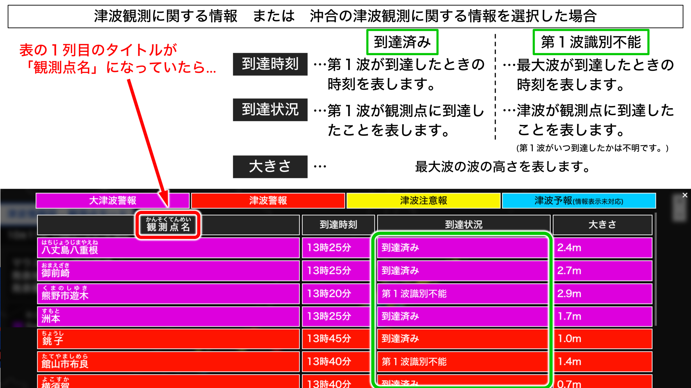

津波情報図 - 海岸線モード
00
月
00
日
00
時
00
分
00
秒
現在
マウスホバー中の地域
発表地域：
発表種類：
以上
█
5m
～
█
3m
～
█
2m
～
█
1m
～
█
0.5m
～
█
～
0.5m
█
観測中
津波情報の取得中…
情報更新
位置初期化
津波到達時刻・高さ
情報
表示
観測点
海岸線
UI
１
２
３
×
見方
大津波警報
津波警報
津波注意報
津波予報
(情報表示未対応)
地域名
ちいきめい
到達時刻
到達状況
大きさ
×

close
情報提供元
・
GeoJSON地図データ
by
Natural Earth
・
GeoJSON海岸線データ
by
基盤地図情報
・
Web地図システム
by
Leaflet
・
PHPサーバー津波情報
by
MiyakojimaCam
・
津波情報
by
P2P地震情報